第五章 Blur Tools 模糊工具
- Blur [Blur]
- Defocus [Dfo]
- Directional Blur [DrBl]
- Glow [Glo]
- Sharpen [Shrp]
- Soft Glow [SGl]
- Unsharp Mask [Us]
- VariBlur [VBl]
- Vector Motion Blur [VBl]
 |
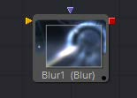 | 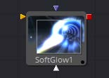 |
| 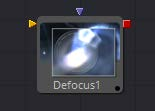 | 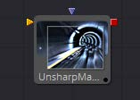 | |
| 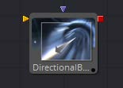 | 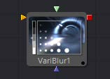 | |
| 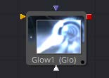 | 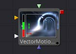 | |
| 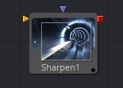 |
Blur [Blur]
Blur工具所做正是其名字所暗示——它将输入图像模糊化。这是最常用的图像处理操作之一。
Controls
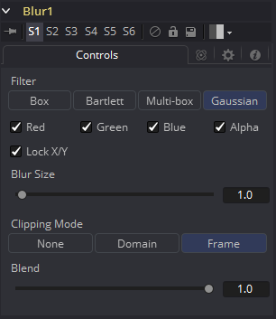
注意：由于完美的高斯滤波器需要检查无限多个像素，因此所有实用高斯都必然是近似值。Fusion使用的算法是一种高度优化的方法，具有许多优点，但在某些极端情况下可能会在边缘产生可见的振铃。此振铃仅在模糊浮动深度图像时出现，并且通常远低于可见性限制，尤其是在最终渲染或HiQ模式下，但可能出现在后续处理中。如果您遇到这种情况，选择Multi-Box过滤器可能是一种可行的选择。
Filter Type
Filter Type按钮阵列允许选择要应用于图像的滤镜。
- Box Blur: 此选项将Box Blur效果应用于整个图像。此方法比高斯模糊更快但产生较低质量的结果。
- Soften: Soften应用一般的柔化滤镜效果。此滤波器方法比Gaussian滤镜慢，并产生较低质量的结果。它包含在内，仅与旧流量兼容。
- Bartlett: Bartlett应用了一种更精细、抗锯齿的模糊滤镜。
- Multi-Box: Multi-Box使用多个通道中分层的盒式滤镜来逼近高斯形状。利用适度的通过次数（例如，4次），可以获得高质量的模糊，通常比高斯滤波器更快并且没有任何振铃。
- Gaussian: Gaussian应用平滑、对称的模糊滤波器，使用复杂的恒定时间高斯近似算法。此模式是默认滤镜方法。
Color Channels (RGBA)
滤镜默认在R、G、B和A通道上运行。通过单击每个通道旁边的复选框可以使它们处于活动或非活动状态，从而实现选择性通道过滤。
注意：这与常用控件下的RGBA复选框不同。模糊工具在处理图像之前会考虑这些选择，因此取消选择通道将导致工具在处理时跳过该通道，从而加快渲染该效果的速度。
相反，Common Controls选项卡下的通道控件将在工具处理后应用。
Lock X/Y
将X和Y模糊滑块锁定在一起，以实现对称模糊。默认情况下会选中此选项。
Blur Size
设置应用于图像的模糊量。取消选择锁定X和Y控制时，将提供对每个轴的独立控制。
Clipping Mode
此选项设置用于在执行定义渲染域时处理图像边缘的模式。这对于像Blur这样的工具非常重要，这可能需要来自当前域之外的图像部分的样本。
- Frame: 默认选项是Frame，它自动设置工具的定义域以使用图像的完整帧，有效地忽略当前的定义域。如果上游DoD小于帧，则帧中的剩余区域将被处理为黑色/透明。
- Domain: 在应用工具的效果时，将此选项设置为域将遵循定义的上游域。在工具使用大型滤镜的情况下，这会产生不利的剪切效果。
- None: 将此选项设置为None将不会执行任何源图像剪切。这意味着处理通常位于上游DoD之外的工具效果所需的任何数据都将被视为黑/透明。
Blend
这是Common Controls选项卡中Blend滑块的克隆实例。对此控件进行的更改同时对常用控件中的控件进行。
Blend滑块将工具的结果与其输入混合，将效果与任何小于1.0的值混合。
Examples
这是模糊滤镜的比较，可视化为过滤边缘的“横截面”。正如您所看到的，Box将创建一个线性斜坡，而Bartlett创建一个更平滑的斜坡。Multi-box和Gaussian导致更平滑的斜坡，除非您在斜坡上非常靠近放大，否则几乎无法区分。如上所述，Gaussian将略微过冲，如果在浮点图像上使用，可能会导致负值。
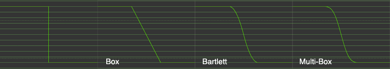
Defocus [Dfo]
Defocus工具模拟失焦相机镜头的效果，包括晕染和图像眩光。它提供快速但相对不准确的Gaussian模式，以及更逼真但更慢的镜头模式。
Controls
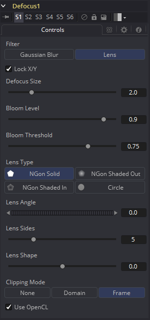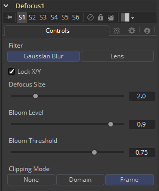
Filter
使用此菜单选择应用于创建散焦的精确方法。Gaussian应用相当简单的效果，而Lens模式将创建更加逼真的散焦。Lens模式将比Gaussian慢得多。
Lock X/Y
选择Lock X/Y时，将对图像的X轴和Y轴执行相同的散焦量。取消选择以获得单独控制。
Defocus Size
Defocus Size控件设置散焦效果的大小。较高的值会使图像模糊更多，并产生更大的光晕。
Bloom Level
Bloom Level控件确定应用于高于bloom阈值的像素的晕染的强度和大小。
Bloom Threshold
值高于设置Bloom Threshold的像素将散焦并应用发光（晕染）。低于该值的像素仅进行散焦。
Lens Type
用于创建“糟糕的散景”效果的基本形状。这可以通过Angle、Sides和Shape滑块进一步细化。
Lens Angle
定义形状的旋转。将Lens Types设置为NGon可以看到最佳效果。由于圆形的圆特性，当Lens Types设置为Circle时，此滑块将没有可见的效果。
Lens Sides
定义NGon形状将具有多少边。将Lens Types设置为NGon可以看到最佳效果。由于圆形的圆特性，当Lens Types设置为Circle时，此滑块将没有可见的效果。
Lens Shape
定义NGons的指向性。更高的值将创造一个更尖锐，星光的外观。更低的值创造更平滑的NGons。将Lens Types设置为NGon并将Lens Sides设置为5至10可以看到最佳效果。由于圆形的圆特性，当Lens Types设置为Circle时，此滑块将没有可见的效果。
Use OpenCL
这个选项在Fusion的OpenCL Supercomputing中引入，可以在GPU而不是CPU上产生效果。根据计算机中使用的显卡，这可将工具的速度提高30倍甚至更多。
Clipping Mode
此选项设置用于在执行定义渲染域时处理图像边缘的模式。这对于像Blur这样的工具非常重要，这可能需要来自当前域之外的图像部分的样本。
- Frame: 默认选项是Frame，它自动设置工具的定义域以使用图像的完整帧，有效地忽略当前的定义域。如果上游DoD小于帧，则帧中的剩余区域将被处理为黑色/透明。
- Domain: 在应用工具的效果时，将此选项设置为域将遵循定义的上游域。在工具使用大型滤镜的情况下，这会产生不利的剪切效果。
- None: 将此选项设置为None将不会执行任何源图像剪切。这意味着处理通常位于上游DoD之外的工具效果所需的任何数据都将被视为黑/透明。
Directional Blur [DrBl]
此工具用于创建方向性（Directional）和径向（Radial）模糊。它对于创建模拟运动模糊和光线类型效果很有用。Directional Blur会影响所有通道（RGBA）。
Controls
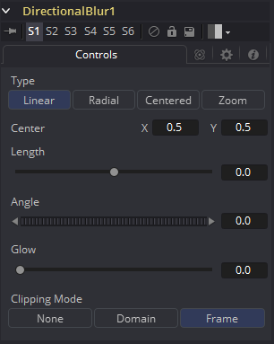
Type
此按钮阵列用于选择要提供给图像的方向模糊的类型（Type）。
- Linear: Linear以直线扭曲图像，类似于超速列车窗口中出现的风景。
- Radial: 径向将产生一种扭曲，起源于某个任意中心，向外辐射，如果一个人在火车头部向前看就会出现。
- Centered: Centered按钮产生类似于Linear的结果，但模糊效果均匀分布在原件的两侧。
- Zoom: Zoom会在图像拖影的比例中产生失真，以模拟以低速快门拍摄相机的变焦条纹。
Center X and Y
此坐标控件和十字准线仅影响Radial和Zoom运动模糊类型。它用于计算模糊效果开始的位置。
Length
长度调整效果的强度和方向。低于零的值会导致模糊与角度控制相反。大于滑块最大值的值可以输入到滑块的编辑框中。
Angle
在两种Linear模式下，此控件将修改方向模糊的方向。在Radial和Zoom模式下，效果将类似于在查看同一点时相机旋转的效果。如果长度滑块的设置不为0，将会产生漩涡的效果。
Glow
这将为方向模糊添加一个Glow，可用于复制由较长的快门速度引起的相机曝光增加的效果。
Clipping Mode
此选项设置用于在执行定义渲染域时处理图像边缘的模式。这对于像Blur这样的工具非常重要，这可能需要来自当前域之外的图像部分的样本。
- Frame: 默认选项是Frame，它自动设置工具的定义域以使用图像的完整帧，有效地忽略当前的定义域。如果上游DoD小于帧，则帧中的剩余区域将被处理为黑色/透明。
- Domain: 在应用工具的效果时，将此选项设置为域将遵循定义的上游域。在工具使用大型滤镜的情况下，这会产生不利的剪切效果。
- None: 将此选项设置为None将不会执行任何源图像剪切。这意味着处理通常位于上游DoD之外的工具效果所需的任何数据都将被视为黑/透明。
Glow [Glo]
Glow基本上是通过模糊图像，然后使模糊的结果变亮并将其与原始图像混合来创建的。 Glow工具提供了一种更方便的方式来实现这种效果，以及该方法的各种变化。例如，Bartlett发光是一种高质量的发光，并有着更平滑的下降，但是，在较大尺寸的情况下，处理器密集程度更高。
Controls
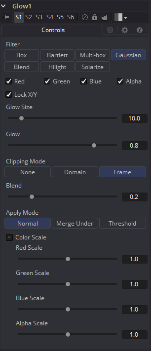
Filter
使用这些按钮选择滤镜中使用的模糊方法。选项如下所述。
- Box: 一个简单但非常快速的Box滤镜。
- Bartlett: Bartlett增加了更柔和、更精细的发光和更平滑的下降，但渲染时间可能比Box更长。
- Multi-box: Multi-box使用多个过程中分层的Box滤镜来近似Gaussian形状。 利用适度的通过次数（例如，4次），可以获得高质量的模糊，通常比Gaussian滤镜更快，并且没有任何振铃。
- Gaussian: Gaussian增加了柔和的光晕，由Gaussian算法模糊。这是默认方法。
- Blend: Blend添加了一种在白色和黑色中均匀可见的非线性光晕。
- Hilight: Hilight在周围像素中添加发光而不会产生光晕。
- Solarize: Solarize增添了发光，使图像过曝。
Color Channels (RGBA)
滤镜默认在R、G、B和A通道上运行。通过单击每个通道旁边的复选框可以使它们处于活动或非活动状态，从而实现选择性通道过滤。 这与在常用控件下找到的RGBA复选框不同。该工具在处理之前会考虑这些控件。取消选择通道将导致工具在处理时跳过该通道，从而加快效果的渲染速度。 相反，Common Controls选项卡下的通道控件将在工具处理后应用。
Lock X/Y
选中Lock X/Y时，水平和垂直发光量都将被锁定。否则，可能会对每个轴应用单独的模糊量。
Glow Size
Glow Size确定发光效果的大小。较大的值会扩展图像的发光高光的大小。
Num Passes
仅在Multi-box模式下可用。较大的值可以使效果更平滑，但也会增加渲染时间。最好在所需要的质量和可接受的渲染时间之间找到平衡。
Glow
Glow滑块确定发光效果的强度。较大的值趋向于使图像完全变为白色。
Clipping Mode
此选项设置用于在执行定义渲染域时处理图像边缘的模式。这对于像Blur这样的工具非常重要，这可能需要来自当前域之外的图像部分的样本。
- Frame: 默认选项是Frame，它自动设置工具的定义域以使用图像的完整帧，有效地忽略当前的定义域。如果上游DoD小于帧，则帧中的剩余区域将被处理为黑色/透明。
- Domain: 在应用工具的效果时，将此选项设置为域将遵循定义的上游域。在工具使用大型滤镜的情况下，这会产生不利的剪切效果。
- None: 将此选项设置为None将不会执行任何源图像剪切。这意味着处理通常位于上游DoD之外的工具效果所需的任何数据都将被视为黑/透明。
Blend
这是Common Controls选项卡中Blend滑块的克隆实例。对此控件进行的更改同时对常用控件中的控件进行。 Blend滑块将工具的结果与其输入混合，将效果与任何小于1.0的值混合。
Apply Mode
在将发光（Glow）应用于图像时，可以使用三种Apply Mode。
- Normal: 默认。此模式只是将发光直接添加到原始图像的顶部。
- Merge Under: Merge Under根据Alpha通道放置图像下方的发光。
- Threshold: Threshold模式允许剪切阈值。将出现一个新的范围滑块，此控件会剪切发光的效果。值低于低值的发光区域中的像素将被推到黑色。值大于高的像素将被推到白色。
High-Low Range Control
仅在Threshold模式下可用。亮度区域中值低于低值的像素将被推至黑色。值大于高的像素将被推到白色。
Color Scale (RGBA)
这些Scale滑块通常是标记为Color Scale的显示控件。它们可用于单独调整应用于每个颜色通道的发光量，从而对发光进行着色。
Glow Pre Mask
Glow工具支持使用发光蒙版进行预遮罩。Glow Pre Mask在应用发光之前过滤图像。然后将发光合并回原始图像上。 这与剪切渲染结果的常规效果蒙版不同。 发光遮罩允许发光延伸到遮罩的边框之外，同时将发光源限制为遮罩内的那些像素。 要应用发光蒙版（glow mask），请在发光工具处于活动状态时从上下文菜单中选择Glow Mask而不是Effect Mask。Glow Mask与其他方面的Effect Mask相同。
Sharpen [Shrp]
Sharpen工具使用卷积滤镜来增强图像中的细节。
Controls
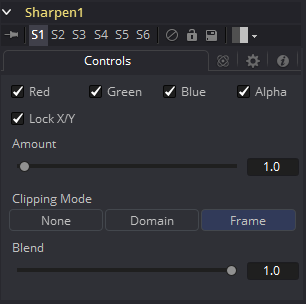
Color Channels (RGBA)
滤镜默认在R、G、B和A通道上运行。通过单击每个通道旁边的复选框可以使它们处于活动或非活动状态，从而实现选择性通道过滤。 这与在常用控件下找到的RGBA复选框不同。该工具在处理之前会考虑这些控件。取消选择通道将导致工具在处理时跳过该通道，从而加快效果的渲染速度。 相反，Common Controls选项卡下的通道控件将在工具处理后应用。
Lock X/Y
这将锁定X和Y锐化滑块以进行对称锐化。 默认情况下会选中此选项。
Amount
此滑块设置应用于图像的锐化量。 取消选择Lock X/Y控件时，将提供对每个轴的独立控制。
Clipping Mode
此选项设置用于在执行定义渲染域时处理图像边缘的模式。这对于像Blur这样的工具非常重要，这可能需要来自当前域之外的图像部分的样本。
- Frame: 默认选项是Frame，它自动设置工具的定义域以使用图像的完整帧，有效地忽略当前的定义域。如果上游DoD小于帧，则帧中的剩余区域将被处理为黑色/透明。
- Domain: 在应用工具的效果时，将此选项设置为域将遵循定义的上游域。在工具使用大型滤镜的情况下，这会产生不利的剪切效果。
- None: 将此选项设置为None将不会执行任何源图像剪切。这意味着处理通常位于上游DoD之外的工具效果所需的任何数据都将被视为黑/透明。
Blend
这是Common Controls选项卡中Blend滑块的克隆实例。对此控件进行的更改同时对常用控件中的控件进行。 Blend滑块将工具的结果与其输入混合，将效果与任何小于1.0的值混合。
Soft Glow [SGl]
Soft Glow工具类似于Glow工具，但对图像执行额外处理以创建更柔和，更自然的发光。 该工具非常适合行星周围的大气雾霾、肤色和模拟梦幻般的环境。
Controls
注意：Glow工具支持使用工具图块上的Glow Pre Mask输入进行预遮罩。预遮罩在应用发光之前限制图像。然后将发光与原始图像组合。这与限制渲染结果的常规效果遮罩不同。
发光遮罩允许发光延伸到遮罩的边框之外，同时将发光源限制为遮罩内的那些像素。
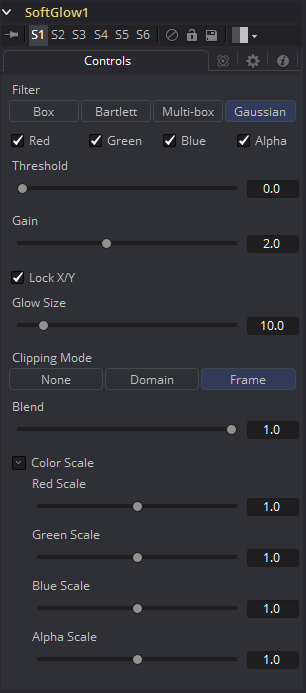
Filter
使用这些按钮选择滤镜中使用的模糊方法。选项如下所述。
- Box: 一个简单但非常快速的Box滤镜。
- Bartlett: Bartlett增加了更柔和、更精细的发光和更平滑的下降，但渲染时间可能比Box更长。
- Multi-box: Multi-box使用多个过程中分层的Box滤镜来近似Gaussian形状。 利用适度的通过次数（例如，4次），可以获得高质量的模糊，通常比Gaussian滤镜更快，并且没有任何振铃。
- Gaussian: Gaussian增加了柔和的光晕，由Gaussian算法模糊。这是默认方法。
Color Channels (RGBA)
滤镜默认在R、G、B和A通道上运行。通过单击每个通道旁边的复选框可以使它们处于活动或非活动状态，从而实现选择性通道过滤。 这与在常用控件下找到的RGBA复选框不同。该工具在处理之前会考虑这些控件。取消选择通道将导致工具在处理时跳过该通道，从而加快效果的渲染速度。 相反，Common Controls选项卡下的通道控件将在工具处理后应用。
Threshold
该控件用于限制柔和发光的影响。 阈值越高，像素在受到发光影响之前必须越亮。
Gain
Gain控制定义发光的亮度。
Lock X/Y
选中Lock X/Y时，水平和垂直发光量都将被锁定。否则，可能会对每个轴应用单独的模糊量。
Glow Size
Glow Size确定发光效果的大小。较大的值会扩展图像的发光高光的大小。
Num Passes
仅在Multi-box模式下可用。较大的值可以使效果更平滑，但也会增加渲染时间。最好在所需要的质量和可接受的渲染时间之间找到平衡。
Glow
Glow滑块确定发光效果的强度。较大的值趋向于使图像完全变为白色。
Clipping Mode
此选项设置用于在执行定义渲染域时处理图像边缘的模式。这对于像Blur这样的工具非常重要，这可能需要来自当前域之外的图像部分的样本。
- Frame: 默认选项是Frame，它自动设置工具的定义域以使用图像的完整帧，有效地忽略当前的定义域。如果上游DoD小于帧，则帧中的剩余区域将被处理为黑色/透明。
- Domain: 在应用工具的效果时，将此选项设置为域将遵循定义的上游域。在工具使用大型滤镜的情况下，这会产生不利的剪切效果。
- None: 将此选项设置为None将不会执行任何源图像剪切。这意味着处理通常位于上游DoD之外的工具效果所需的任何数据都将被视为黑/透明。
Blend
这是Common Controls选项卡中Blend滑块的克隆实例。对此控件进行的更改同时对常用控件中的控件进行。 Blend滑块将工具的结果与其输入混合，将效果与任何小于1.0的值混合。
Color Scale (RGBA)
这些Scale滑块通常是标记为Color Scale的显示控件。它们可用于单独调整应用于每个颜色通道的发光量，从而对发光进行着色。
Unsharp Mask [Us]
Unsharp Mask是一种仅用于锐化图像中边缘的技术。此工具最常用于校正低对比度图像中的模糊和细节丢失，例如，从远距离星系的长曝光照片中提取有用的细节。 此滤镜从图像中提取一系列频率并使其模糊以减少细节。然后将模糊结果与原始图像进行比较。原始图像和模糊图像之间具有显着差异的像素可能是边缘细节。然后增亮像素以增强它。
Controls
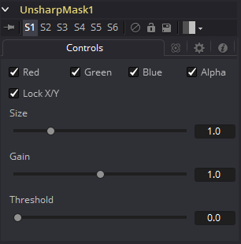
Color Channels (RGBA)
滤镜默认在R、G、B和A通道上运行。通过单击每个通道旁边的复选框可以使它们处于活动或非活动状态，从而实现选择性通道过滤。 这与在常用控件下找到的RGBA复选框不同。该工具在处理之前会考虑这些控件。取消选择通道将导致工具在处理时跳过该通道，从而加快效果的渲染速度。 相反，Common Controls选项卡下的通道控件将在工具处理后应用。
Lock X/Y
选中Lock X/Y时，水平和垂直锐化量都将被锁定。否则，可以对图像的每个轴应用单独的发光量。
Size
此控件调整应用于提取图像的模糊滤镜的大小。此值越高，将像素识别为细节的可能性越大。
Gain
Gain控件可调整通过蒙版识别为细节的像素的增益量。更高的值将创建更清晰的图像。
Threshold Low and High
该范围控制确定来自要提取的源图像的频率。提高低值将消除比较中的暗像素。高值以上的像素将具有所应用的增益的全部效果。
VariBlur [VBl]
VariBlur工具提供真实的每像素变量模糊，使用第二个图像来控制每个像素的模糊量。它在某种程度上与Depth Blur工具类似，但在许多情况下使用不同的方法来获得更清晰的结果。
Controls
注意：必须连接Blur Image输入，否则不会进行模糊处理。
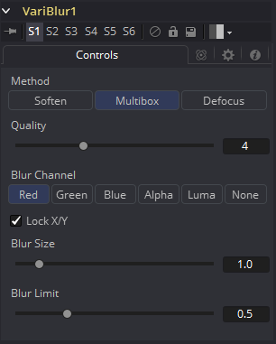
Method
- Soften: 随着Quality的提高，这种方法从简单的Box形状到Bartlett三角形变为看起来不错的平滑模糊。在模糊较少的区域中保留细节比使用Multibox要好一些。
- Multibox: 与Soften类似，这可以在更高的Quality设置下提供更好的Gaussian近似。
- Defocus: 这不是一个真正的散焦，它为一个模糊的像素提供了一个平坦的圆形形状，可以近似散焦的外观。
Quality
提高Quality会提供更加平滑的模糊，但代价是速度。Quality设置为1会对所有方法设置使用非常快速但简单的Box模糊。对于低模糊大小值，Quality设置为2通常就足够了.除非Blur Size特别高，否则4对于大多数工作来说通常都足够好。
Blur Channel
该控件选择使用Blur Image的哪个通道控制应用于每个像素的模糊量。
Lock X/Y
选择后，仅显示Blur Size控件，并且模糊量的更改将同等地应用于两个轴。如果清除该复选框，则会同时显示X和Y的Blur Size单独控件。
Blur Size
增大此控件将增加应用于每个像素的总体模糊量。无论Blur Size如何，模糊图像为黑色或不存在的像素都不会被模糊。
Vector Motion Blur [VBl]
此工具用于基于Vector Channel创建方向性模糊。 此工具将使用由3D应用生成的矢量贴图对图像执行2D模糊。矢量贴图通常是两个浮点图像，一个通道指定像素在X中移动的距离，另一个指定像素在Y中移动的距离。在OpenEXR的情况下，这些通道可以嵌入图像中或RLA/RPF图像、或者也可以使用工具的Vectors输入以单独的图像提供。 矢量通道应使用float16或float32颜色深度，以提供+和-值。 X通道中的值1表示像素已向右移动一个像素，而值-10表示向左移动十个像素。
Controls
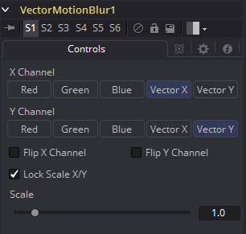
X Channel
使用此多按钮阵列选择图像的哪个通道将提供沿X轴移动像素的矢量。
Y Channel
使用此多按钮阵列选择图像的哪个通道将提供沿Y轴移动像素的矢量。
Flip X Channel
此复选框可用于翻转或反转X矢量。当选中此复选框时，X矢量通道中像素的值5将变为-5。
Flip Y Channel
此复选框可用于翻转或反转Y矢量。当选中此复选框时，Y矢量通道中像素的值5将变为-5。
Lock Scale X/Y
选中此复选框将允许使用对X和Y的Scale的单独滑块。默认情况下，仅提供单个Scale滑块。
Scale/Scale X
如果未选中Lock Scale X/Y复选框，则此滑块将标记为Scale，否则将标记为Scale X。像素的矢量通道值乘以此滑块的值。例如，给定2的缩放和10的矢量值，结果将是20。
Scale Y
仅当选中Lock Scale X/Y复选框时，才会显示此滑块。否则，它将被隐藏，并使用上面Scale滑块中设置的相同值。